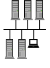
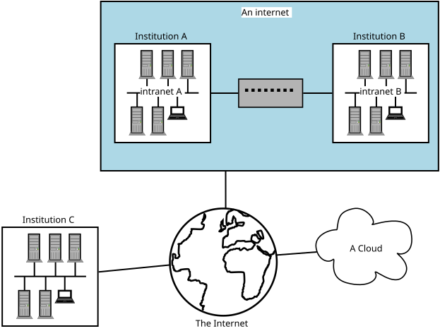
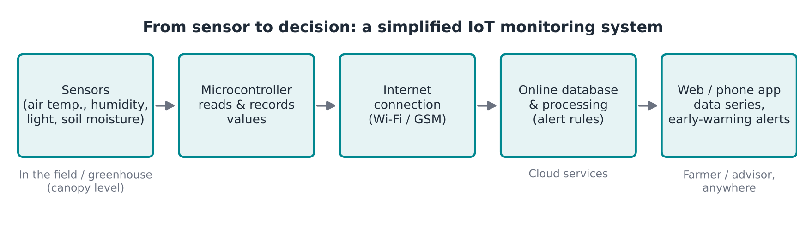
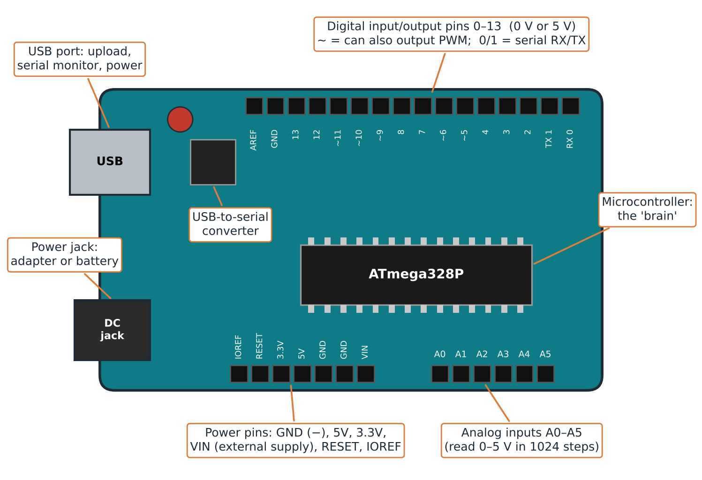
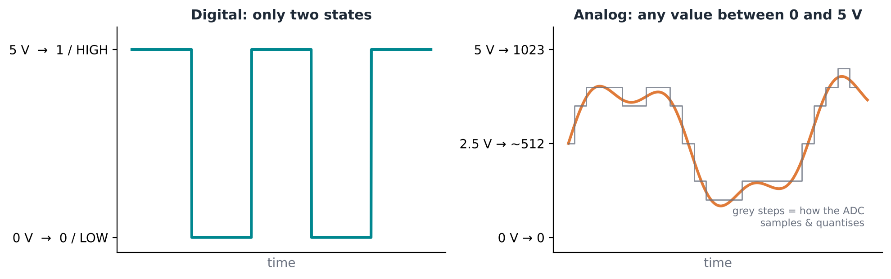
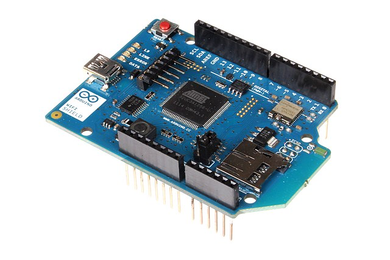
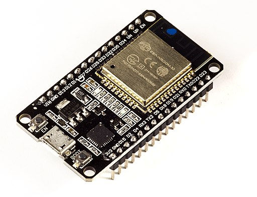
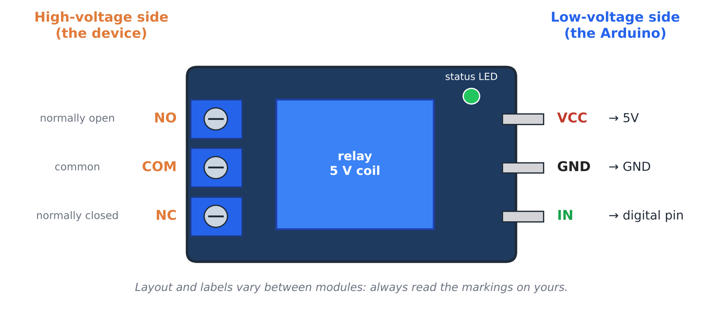
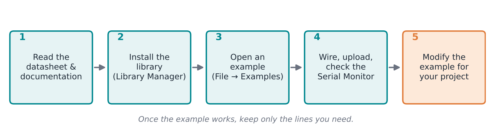
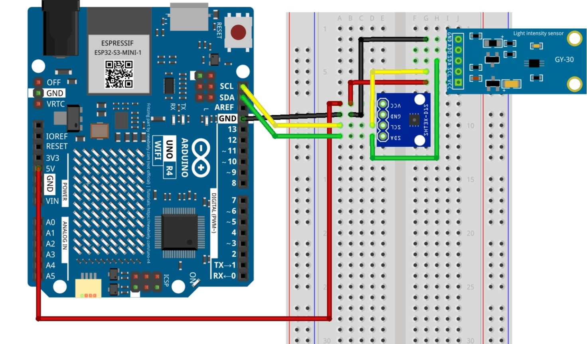

All in One View
Content from Intro to IoT for Horticulture and Open Source
Last updated on 2026-11-27 | Edit this page
Estimated time: 45 minutes
Overview
Questions
- What is the Internet of Things (IoT)?
- Can open-source technology and IoT bring precision agriculture to smallholder farmers?
- How does an electronic sensor turn the environment into data?
- What does a complete IoT monitoring system look like?
- Why does owning the technology and the data matter?
Objectives
- Explain how crop-specific environmental needs lead to science-based advice
- Describe how a sensor converts an environmental parameter into a measurable signal
- Explain what the Internet of Things is, and the basic network terms behind it
- Outline the parts of an IoT system, from sensor to alert
- Compare the benefits and limitations of proprietary and open-source systems
Note: for development and illustration purposes, some content in this episode has been copied verbatim from the Carpentries Incubator lesson Introduction to the Internet of Things (iot-novice).
The guiding question
This lesson introduces the use of Internet of Things (IoT) devices in the agrifood sector. Throughout the course we keep coming back to one question:
Will open-source technology and IoT popularize precision agriculture among smallholder farmers?
To answer it, we need to understand how the technology works, so that we can adapt it to the challenges and projects we work on in agrifood systems (AFS) and horticulture. That is why we start by stepping back to the basics: understanding the building blocks is what allows us to make a leap later.
From plant needs to science-based advice
Plants respond to their environment, and different crops have different environmental needs. Take a single parameter, temperature:
| Crop | At 25 °C |
|---|---|
| Broccoli | In its “dead zone”: poor growth |
| Maize | Good growing conditions |

Matching what a crop needs with the conditions actually measured is, in a nutshell, how science-based advice works.
From theory to practice: electronic sensors
How do we know the real conditions in a specific field or greenhouse? An electronic sensor focuses on one parameter and makes something intangible (temperature, humidity, pH) measurable by converting it into an electrical signal.
The principle is simple. A microcontroller sends a known voltage through a circuit that includes the sensor. When the parameter changes, the sensor changes that voltage, for example from 4 V to 3.8 V. The microcontroller measures the difference and, using the sensor’s known response (its calibration), converts it into a value such as °C or % humidity.
Isolating the violin
The environment is complex: many things happen at the same time. A sensor lets us isolate one parameter from that complexity, like listening to an orchestra and choosing to hear only the violin.
The same principle applies far beyond horticulture: aquaculture, livestock and poultry farming, and even home automation (domotics).
What sensors can tell us
One parameter, one agronomic meaning
Humidity influences water uptake, transpiration and the development of pathogens. These in turn affect how much a crop produces, and therefore how much the farmer earns.
Several parameters combined
By combining light intensity, temperature and humidity, and comparing them with the known conditions that favour pests and diseases (for example fungal diseases), a system can trigger an alert when the risk is high.
The fourth factor: time
A single reading tells us what is happening now. But what about yesterday? Fungal diseases often become visible only after the crop is already infected. If something had been measuring constantly, we could have had an early warning. This is why we automate the recording of parameters, and connect our sensors to the Internet.
The Internet of Things
You might hear “Internet of Things” (IoT) and Arduino mentioned together and often those terms are used as if the one implies the other. However, this is not the case. The Internet of Things refers to all kinds of “Things” that have been connected to the Internet. Often, this includes sensing the environment. You can almost think of IoT as the five senses of the Internet.
Before we continue, we should clarify some key terminology used in networking. When two or more computers are connected such that they can communicate it is called a network.
LAN
When computers are connected together as in the below diagram, we call this a “Local Area Network”, or LAN. This is how the computers within a university campus, or within a farm office and its greenhouses, are connected. You may hear this referred to as the institution’s intranet. All the computers inside it can talk to each other, but computers outside the LAN cannot talk to them.

WAN
A LAN is often connected to other telecommunications networks. The network of university networks in the UK is called “Janet”: this allows institutions to talk to each other. This forms a “Wide Area Network” or WAN, as it spans a much larger geographic distance. This network may also be referred to as an internet but is not the same as The Internet.

“The Internet” versus “an internet”
An “internet” (with a lower case i) and “The Internet” (with an upper case I) are different! With an upper case I, The Internet refers to the wide area network that we connect to view web pages such as Google, Amazon etc, or to which we connect to make Zoom or Skype calls. The Internet is a worldwide collection of networks that we are able to connect to via our Internet Service Providers.
With a lower case i, internet refers to a collection of networks that are connected: a contraction of the phrase “interconnected network”. If university A has a network on campus, and university B has a network, and they decide to connect the two networks as a WAN, then they would have an internet. However they might not necessarily be connected to The Internet.
Challenge: network basics
- What is a network?
- What is an intranet?
- What is the Internet?
- What is the difference between a LAN and a WAN?
- Network: a group of computers connected together. This can be via wires (electrically); microwaves (radio); or fibre optic (light).
- Intranet: a network of computers, such as the one connecting machines within the University to each other.
- The Internet: the network of networks, which connects computers across the globe together.
- A Local Area Network is situated in a small geographic area. A Wide Area Network may span countries, or even the globe. We are even starting to have PANs (Planetary Area Networks)!
From sensor to alert: how an IoT system works
Putting sensors and networks together gives us a complete IoT monitoring system:

- Sensors measure the parameters in the field or greenhouse.
- A microcontroller reads and records the values automatically.
- The device connects to the internet and saves the data online.
- An online program processes the data and triggers alerts. Historical data can be reviewed, and combined with forecasting models.
- An app gives the user access to the data from anywhere: the farmer, but also an extension officer working remotely.

The Cloud
Steps 4 and 5 usually happen “in the cloud”. You may have heard of The Cloud. The cloud refers to a collection of many, many computers which provide services and resources on the Internet. These machines might be physically located in datacentres all over the globe, but the network between them is designed to be as invisible as possible to you. We often don’t care where the computer running a service in the cloud physically resides, as long as the service is reliable and can be accessed from the Internet.
This ephemerality is why we talk about services as if they are in a “cloud”: the computers and the services they run are like droplets of water floating in the sky. There are also multiple clouds in the “sky”: some operated by technology companies, others smaller, such as private clouds hosted by individual institutions or companies for reasons including cost and security.
Not a replacement for the field
Farmers still need to walk their fields. IoT adds a layer of information that supports data-driven decision-making, for example by letting you go back and see what happened in the days before a problem appeared.
Challenge: which of the following are part of the Internet of Things?
With the person next to you, discuss whether you think the following devices are part of the Internet of Things, and why. What other devices do you think would be part of the Internet of Things?
- A computer
- An Arduino
- A traffic camera
- A device publishing current temperature to the Internet
- A smart phone
- A computer is connected to the Internet, but it is a general-purpose machine rather than a “thing” sensing its environment. Usually not counted as IoT.
- An Arduino on its own has no Internet connection, so it is not part of the IoT. It becomes part of it once it is connected.
- A traffic camera that sends images or counts over the network is a typical IoT device.
- A device publishing current temperature to the Internet is the classic IoT example, and exactly what we will build.
- A smart phone is debatable: it is full of sensors and connected, but it is also a general-purpose computer. It often acts as the gateway between IoT devices and their users.
Where we are going
The system above is a finished product. Over the next lessons we will build up to it step by step, through theory and practical exercises: how to code, how to wire, and the basics of electronics. At the end of the series, participants will be able to set up, control and maintain their own sensor networks.
Two principles guide the way:
- Always focus on the final result. There are many ways to solve a problem in code; what matters is that the solution works.
- From hobby to field. A prototype that works on a desk is not enough. Our goal is a device that survives the field environment: heat, cold and daily swings in humidity.
Proprietary and open-source approaches
IoT devices and the platforms behind them can be proprietary (bought as a closed product or service) or open source. Why do we choose open source?
- Owning the data we produce, instead of only being able to consult it through a provider’s service.
- Decentralized production: local small businesses can develop, install and support these devices close to the farmers who use them.
The trade-off: with open source, someone needs the skills to build, install and maintain the devices. That is exactly what this course is for.
Figures quoted in the session: a commercial monitoring box costs around €800–1,000, or about €50 with a subscription in which the farmer does not own the data. A self-built open-source device costs less than $200 in parts (excluding labour, installation and maintenance).
Challenge: your first sensor
Think of a crop or production system you work with.
- Which single parameter would you measure first?
- What decision would that measurement support?
- What would a useful alert say, and who should receive it?
Greenhouse tomatoes: measure air humidity at canopy level. Long periods of high humidity favour fungal diseases. An alert such as “Humidity above the risk threshold for the last 6 hours: ventilate and inspect” would go to the farmer and the extension officer.
Key Points
- Different crops need different conditions; matching needs with measurements is the basis of science-based advice.
- A sensor isolates one parameter and converts it into an electrical signal a microcontroller can measure.
- Combining parameters over time enables early-warning alerts.
- The Internet of Things is all kinds of “things” connected to the Internet, often sensing their environment.
- An IoT system links sensors, a microcontroller, online (cloud) storage and processing, and a user app.
- Open source lets farmers and local businesses own the technology and the data, but requires the skills to build and maintain it.
Content from Meet the Arduino: brain, pins and power
Last updated on 2026-11-27 | Edit this page
Estimated time: 20 minutes
Overview
Questions
- What is a microcontroller development board?
- How does the board connect to a computer, to power and to the environment?
- What is the difference between digital and analog pins?
- How does Arduino compare with other boards such as the Raspberry Pi?
- How can an Arduino become part of the Internet of Things?
Objectives
- Identify the main parts of an Arduino board
- Distinguish digital, analog and power pins
- Compare Arduino with other microcontroller boards and with a single-board computer
Kit distribution and environment check: hand out the boards and USB cables, and check that every participant has the Arduino IDE installed and can select their board under Tools → Board as well as the right port.
The microcontroller development board
The Arduino is a microcontroller development board:
- The microcontroller is the large chip in the centre: the “brain” that runs our program.
- The board around it gives us access to the microcontroller’s pins, which is what makes it possible to program it and connect it to the world.
Arduinos are an open-source electronics platform, designed to teach people about electronics. They can be used to build electronic circuits that can be connected to the Internet, to serve as part of the Internet’s sensing. The microcontroller is an “integrated circuit” (or chip) that can be used together with other electronic components to control things such as motors and sensors. It is, in actual fact, a very small computer that can be programmed.

Photo: SparkFun Electronics from Boulder, USA, CC BY 2.0, via Wikimedia Commons.

The pins
| Pin group | Where | What it does |
|---|---|---|
| Digital (0–13) | One side of the board | Input or output, either 0 or 1 |
| Analog (A0–A5) | Opposite side | Read a range of voltages |
| Power | Next to the analog pins | Supply voltage and close the circuit |
Digital pins
A digital value is either 1 or 0. On this board that means 5 V or 0 V:
- as an output, the pin emits 0 V or 5 V;
- as an input, the microcontroller detects whether 5 V (1) or 0 V (0) arrives at the pin.
Numbering starts at 0: the digital pins go from 0 to 13.
Analog pins
Analog pins read a series of voltage values, for example anything between 0 and 5 V. They can tell the difference between, say, 1.2 V and 3.4 V.
Between 0 and 5 V there are theoretically infinite values, so what matters is the resolution. On the Arduino Uno the analog pins divide 0–5 V into 1024 steps (0 to 1023), so each step is about 5 mV.

Boards for learning, boards for products
There are many similar boards:
- Arduino Uno: the reference board we use to learn.
- Arduino Mega: same layout, more pins and more memory for larger programs.
- ESP32 and ESP8266: popular alternatives, often significantly cheaper than Arduinos and with onboard Wi-Fi.
- Arduino Nano and other small boards: good for a final product, but hard to learn on because the pin labels are tiny.
Full-size boards are very good for prototyping. Once you are confident, you move to a smaller form factor for the final product.
Connecting to the internet
The main thing to notice about the Arduino Uno is that it has no connectivity to the Internet. So even if we connect sensors to it, it cannot be part of the Internet of Things until it is connected to the Internet. However, one can purchase (or build) a Wi-Fi shield that fits on top of the Arduino. With the shield in place, you can program the Arduino to connect to the Internet and publish the data it retrieves from its sensors.

Photo: oomlout, CC BY-SA 2.0, via Wikimedia Commons.
There are now several models of Arduino with onboard Wi-Fi or Bluetooth. See the Arduino hardware page for the whole range. Often, boards from the ESP32 or ESP8266 series are chosen because they have onboard Wi-Fi and are significantly cheaper than Arduinos.

Photo: Ubahnverleih, CC0, via Wikimedia Commons.
What we need from a board
For the projects in this course, any board will do as long as it:
- is Wi-Fi enabled, and
- can be programmed with the Arduino IDE (Integrated Development Environment): the program in which we write code and upload it to the board.
Arduino vs Raspberry Pi
The Raspberry Pi did something similar but different: a system on a board. Besides the processor it has a GPU, RAM and storage, plus USB and LAN ports. It is a fully working, very powerful microcomputer, and it also has pins.
But its operating system is energy- and resource-demanding, and it loses precision in repetitive tasks that must happen at exactly the right time. An Arduino runs only our program, directly on the microcontroller.
The specialist and the professor
The Arduino is a very specialized worker with one tool. The Raspberry Pi is a professor who knows everything but is slower at doing one specific task.
Challenge: know your board
Take your board and find: the microcontroller, the USB port, the power port, a GND pin, digital pin 13 and analog pin A0.
Then: a sensor gives a voltage that changes gradually between 0 and 5 V. Which kind of pin do you connect it to?
An analog pin (A0–A5): it can read the whole range of voltages. A digital pin would only see 0 or 1.
With Arduino, the limit is your creativity. It is not as complicated or as “nerdy” as it looks: the aim is to realize that you can build whatever you need.
Key Points
- An Arduino is a microcontroller (the brain) on a board that gives access to its pins.
- The USB port programs, communicates with and powers the board; a power port lets it run on its own.
- Digital pins are 0 or 1 (0 V or 5 V); analog pins read a range of voltages (0–1023 on the Uno).
- GND closes every circuit; 5V, 3.3V and VIN provide the positive supply.
- Arduino is a specialist: simpler, cheaper on energy and more precise in timing than a Raspberry Pi.
- An Arduino Uno needs a Wi-Fi shield to join the IoT; boards such as the ESP32 have Wi-Fi built in.
Content from From variables to controlling a LED
Last updated on 2026-11-27 | Edit this page
Estimated time: 60 minutes
Overview
Questions
- What is ‘serial communication’?
- What are variables in programming?
- How do I write simple instructions in computer code?
- How do I connect an Arduino to real-life devices such as LEDs?
Objectives
- Explain the basics of programming
- Explain basics of setting up an Arduino circuit including an LED
- Apply basic programming to control a LED
Arduino
Let’s start with taking a closer look at this small computer, the arduino. ‘Arduino’ today is used to describe the arduino company, any of it’s small computing devices and, most specifically, the microcontroller development board (MDB) you have on your desk right now. The microcontroller is actually just the long black processor you find above the POWER and ANALOG IN pins. What makes it a development board is the form factor and the clear labeling and accessibility of the pins. MDBs are designed to develop programs and tools for microcontrollers; in production systems you’ll mostly find very small microcontrollers that simply run these developed programs.
The connectivity of the board consists of: - the USB port used to connect the MDB with your PC, to upload and test programs - the power supply (often a barrel jack) to simply deliver power to a programmed MDB so it can run independently of another PC - 5 analog input pins. Analog means they can process continuous voltage input between 0 and 5V, which the processor can work with - 13 digital pins. Digital means they register anything above a threshold voltage (~3.5V) as ‘ON’ and everything as ‘OFF’ - the power pins: one delivering 3.3V output, one delivering 5V output - ground pins: for working electrical circuits the - pole of the circuit needs to be connected to ground - some built-in LEDs for status indication and testing purposes - a reset button
Arduino IDE: Programming the MDB
Following the setup instructions, you should be able to start the
program, connect your MDB and select it in the menu. To check that
everything works, we can write a small program and upload it to the MDB.
Programs are also called ‘sketches’ in the arduino context: they are the
text files containing your instructions written in a programming
language. Arduino and its integrated development environment (IDE) use a
variant of the popular language ‘C’. You’ll notice that sketches
generally consist of at least the two elements setup and
loop. To test correct setup and connectivity write the
sketch in the first challenge below.
Once you’re done you’ll need to compile and upload your program.
Compilation is the process of translating the instructions written in
the C language to the binary code that the microprocessor can work with.
You trigger it by clicking the checkmark button on the upper left side
of the IDE window. To send the compiled program to the board you will
then click the arrow button right next to it. To verify that the MDB
received the program and is executing it correctly, click on the ‘Serial
port’ button in the upper right corner of the IDE to open the Serial
port tab. There you should see the output of the
Serial.print statemens in the setup and loop of your first
sketch.
OUTPUT
"Is there anybody... ...out there? ...out there? ...out there? ...out there?Great job! Now try to experiment with the code a bit:
Challenge 2: Changing the code
- Try to alter the
printstatement to aprintlnstatement. - Change the value of the
delaystatements in your sketch.
-
printlnwill print every new output on a new line. -
delayis measured in milliseconds. Smaller values will accelerate the loop.
Serial communication
So what is this Serial statement in your sketch? Serial
communication describes the process of digital communication, meaning
information is sent one electric pulse at a time, resulting in a binary
code being transmitted over a wire. In our case this wire is the USB
cable between our computer and the MDB. The Serial statment
instructs the MDB to send the print output as a digital
signal over the connecting USB cable back to your computer. The arduino
IDE’s serial monitor allows your computer to decode and display that
message on your screen.
Variables
So far so good: We can send instructions in the form of compiled sketches to the MDB and we now know how to send messages back to our computer. But programs would not be very interesting if everything in them would be as static as the initial sketch we just tried. In fact, ##variables## are the backbone of programming: Stored values that can, as the name suggests, vary during the course of a program. The C language requires you to declare variables explicitly before they can be used. This is so sufficient memory can be allocated to store the variable during program execution.
An important concept here are ##types##: The type of a variable indicates what values it can take. C requires you to also provide an explicit type for each variable. Let’s start with an example:
C
void() {
// Lines starting with '//' or wrapped in between '/*' and '*/' are comments:
/* They simply exist for annotation of the code and
will be ignored by the compiler and microprocessor */
/* To declare a variable:
1: mandatory: indicate its type (integer, float, bool, char, String, etc, ...)
2: mandatory: choose a unique name
3: optional: initialize its value
the pattern is
<type> <unique name> = <initialization value>;
*/
//NB: assiging a value to the wrong type may lead to unexpected behavior
//and the compiler may refuse and flag the error
int my_variable // declaration without initialization
my_variable = 100; // I can assign a value later, in another statement
int my_variable_2 = -273; // declaration and value in the same statement
unsigned int my_variable_3 = 1023; //an unsigned integer can only assume positive values
}In this example we used the integer type, but what if we need to work with decimal number, e.g. to store a temperature value? What if we only need to store a truth value (e.g. temperature too high)? And how about text?
C
// Example of declaration of a floating point variable
float my_float_variable = 3.13;
// Bool types hold true or false only
bool my_bool = true;
bool my_second_bool = 1; // true and 1 are the same for bool, as are 0 and false
// Char types hold single characters
char my_char = 'a';
// String can store a longer sequence of text, useful for messages
String one_string = "to be or not to be... this is the question!";Now that we know what variables are and after learning how to use some of them, let’s make use of them in a sketch.
Content from Using sensors
Last updated on 2026-11-27 | Edit this page
Estimated time: 60 minutes
Overview
Questions
- How do you write a lesson using R Markdown and sandpaper?
Objectives
- Explain how to use markdown with the new lesson template
- Demonstrate how to include pieces of code, figures, and nested challenge blocks
Introduction
This is a lesson created via The Carpentries Workbench. It is written
in Pandoc-flavored Markdown
for static files (with extension .md) and R Markdown for dynamic files
that can render code into output (with extension .Rmd).
Please refer to the Introduction to The
Carpentries Workbench for full documentation.
What you need to know is that there are three sections required for a valid Carpentries lesson template:
-
questionsare displayed at the beginning of the episode to prime the learner for the content. -
objectivesare the learning objectives for an episode displayed with the questions. -
keypointsare displayed at the end of the episode to reinforce the objectives.
Inline instructor notes can help inform instructors of timing challenges associated with the lessons. They appear in the “Instructor View”
Challenge 1: Can you do it?
What is the output of this command?
R
paste("This", "new", "lesson", "looks", "good")
OUTPUT
[1] "This new lesson looks good"Challenge 2: how do you nest solutions within challenge blocks?
You can add a line with at least three colons and a
solution tag.
Figures
You can include figures generated from R Markdown:
R
pie(
c(Sky = 78, "Sunny side of pyramid" = 17, "Shady side of pyramid" = 5),
init.angle = 315,
col = c("deepskyblue", "yellow", "yellow3"),
border = FALSE
)

Or you can use pandoc markdown for static figures with the following syntax:
{alt='alt text for accessibility purposes'}
Math
One of our episodes contains \(\LaTeX\) equations when describing how to create dynamic reports with {knitr}, so we now use mathjax to describe this:
$\alpha = \dfrac{1}{(1 - \beta)^2}$ becomes: \(\alpha = \dfrac{1}{(1 - \beta)^2}\)
Cool, right?
Key Points
- Use
.mdfiles for episodes when you want static content - Use
.Rmdfiles for episodes when you need to generate output - Run
sandpaper::check_lesson()to identify any issues with your lesson - Run
sandpaper::build_lesson()to preview your lesson locally
Content from From variables to controlling a LED
Last updated on 2026-11-27 | Edit this page
Estimated time: 60 minutes
Overview
Questions
- What is ‘serial communication’?
- What are variables in programming?
- How do I write simple instructions in computer code?
- How do I connect an Arduino to real-life devices such as LEDs?
- yet another question?
- and anther
Objectives
- Explain the basics of programming
- Explain basics of setting up an Arduino circuit including an LED
- Apply basic programming to control a LED
Serial communication
Variables and data types
Basic electronics and solderless wiring
Digital output
Content from Relays: controlling real-world devices
Last updated on 2026-11-27 | Edit this page
Estimated time: 35 minutes
Overview
Questions
- Why can’t we connect a pump or a lamp directly to an Arduino pin?
- What is a relay and how does it keep two circuits separate?
- How do I read the specifications of a relay?
- What is the difference between normally open and normally closed?
Objectives
- Explain why low-voltage boards need a relay to control high-voltage devices
- Read the label and the connections of a relay module
- Wire a relay module and control it from a digital pin
- Choose between normally open and normally closed wiring for an agricultural device
Why we need relays
So far we have switched an LED on and off. But what if we want to switch on a lamp, a fan, a water pump, a heating system or a dryer? These are much heavier loads, and they cannot be connected to the Arduino the way we connected the LED. In the worst case this starts a fire; in the best case it destroys the board.
The reason is that the microcontroller unit (MCU), whether an Arduino or an ESP32, works in a completely different range from real-world devices:
| Microcontroller (MCU) | Real-world devices | |
|---|---|---|
| Voltage | 3.3–5 V direct current (DC) | 120–250 V alternating current (AC), or 12–24–48 V DC |
| Current | very low (max. ~20 mA per pin) | often 1–10 A |
Think of voltage as the pressure of water in a pipe. The 5 V of an Arduino is a gentle pressure. The 230 V of a wall socket is a pressure that would burst our pipes.
Arms and muscles
If the microcontroller is the logic brain, relays are the physical arms and muscles that let it control higher-voltage devices.
How a relay works
A relay is a switch operated by electricity. Inside the box there are two separate parts:
- A coil. When the Arduino sends a 5 V signal, the coil becomes a magnet.
- A switch. The magnet pulls it, and it closes (or opens) the circuit of the device. You can hear it: every time the relay switches, it clicks.

The two circuits never touch: the relay creates an electrical separation between the MCU and the high-voltage circuit. The device is still powered by its own circuit. We are sending a signal, we are not powering the device: the Arduino only opens and closes the switch.
Reading the label
Before using a relay, read its technical specifications. They are printed, very small, on the blue box. A common relay reads:
| Printed on the relay | Meaning |
|---|---|
10A 250VAC |
Can switch up to 10 A at up to 250 V AC (wall sockets in Europe, Africa, most of Asia) |
10A 125VAC |
Can switch up to 10 A at up to 125 V AC (wall sockets in the Americas) |
10A 30VDC |
Can switch up to 10 A at up to 30 V DC (e.g. 12 or 24 V systems) |
SRD-05VDC-SL-C |
05VDC: the relay is triggered by a 5 V signal |
The last line is the one that matters most for us: it tells us which signal voltage switches the relay.
3.3 V boards
Some MCUs, such as the ESP32, can only send signals of 3.3 V. With them, either buy a relay module that is triggered at 3.3 V, or use a logic level converter: a small additional board that turns a 3.3 V signal into a 5 V one.
Buy the module, not the bare relay
Always look for a relay module: the relay already mounted on a small board with the components that let a pin switch it safely and protect your board, and often an LED showing whether it is on. Bare relays are cheaper, but need all those extra components built around them.
The two sides of a relay module
Every relay module has two sides: one that goes to the Arduino, and one that goes to the device.

| Side | Connection | Connect to |
|---|---|---|
| Low voltage (Arduino) | VCC | 5V of the Arduino (powers the relay) |
| GND | GND of the Arduino | |
| IN (signal) | a digital pin, e.g. pin 7 | |
| High voltage (device) | COM (common) | one end of the wire you want to switch |
| NO (normally open) | the other end: the device is off until the relay switches | |
| NC (normally closed) | the other end: the device is on until the relay switches |
To control a device, we interrupt one of its wires. One end goes into COM, the other into NO or NC. The relay then closes or opens the gap.
Normally open or normally closed?
“Normally” describes what happens when the relay is not powered: when the pin is LOW, or when the Arduino is switched off or unplugged.

- NO (normally open): the circuit is open, so the device is off by default. It runs only while the Arduino switches the relay on.
- NC (normally closed): the circuit is closed, so the device is on by default, even when the Arduino is off. The Arduino switches it off.
A counterintuitive name
“Normally open” sounds like “on”, but it means the circuit is open: nothing flows. This is the safe choice. If the controller or its power fails, pumps, heaters and cooling systems switch off rather than staying on. NC is useful when a device must keep running even if the controller fails.
Challenge 1: NO or NC?
For each device, would you wire it to NO or to NC? Think about what should happen if the Arduino stops working.
- An irrigation pump
- A greenhouse heater
- The ventilation fans of a poultry house
- Irrigation pump: NO. If the controller fails, the pump stops instead of flooding the field and wasting water.
- Greenhouse heater: NO. A heater that cannot be switched off is a risk of overheating the crop, or of fire.
- Ventilation fans: it depends. With NC, the fans keep running if the controller fails, which protects the animals from heat and poor air. There is often no single right answer: ask yourself which failure is the less dangerous one.
Types of relays
- Electromagnetic relays (the blue box in your kit): a coil and a mechanical switch. They can switch heavy loads and are very reliable, but they are not made to switch many times per second.
- Solid-state relays (SSR): no moving parts, silent and fast. The common low-cost modules only switch AC, and handle smaller loads.
Both come as modules with 1, 2, 4, 8 or 16 relays.
In greenhouses or poultry farms we rarely need fast switching, but we do need something reliable that can manage heavy loads. That is why electromagnetic relays are usually the right choice.
Hands-on: switching a motor
We build a scale model of a real installation: two separate circuits.
- Circuit 1, control: the Arduino, powered by the computer, and the low-voltage side of the relay.
- Circuit 2, load: a small motor, powered by its own 9 V battery, through the high-voltage side of the relay.

- Connect the relay’s VCC to 5V, GND to GND, and IN to digital pin 7.
- Connect the battery’s + to COM.
- Connect NO to one terminal of the motor.
- Connect the motor’s other terminal to the battery’s −.
Wire colours
Always use the same colours for the same role, so you can read a circuit at a glance: red for +, black for −, and a bright colour for signals.
The code is the same as the Blink example (File → Examples → 01.Basics → Blink): only the pin changes. Notice the comment block at the top: describing the goal and the wiring at the start of every sketch is a good habit.
C
/*
Relay blink
Switches a relay on and off every two seconds.
Circuit: relay module VCC -> 5V, GND -> GND, IN -> digital pin 7
*/
const int RELAY_PIN = 7; // digital pin connected to IN
void setup() {
pinMode(RELAY_PIN, OUTPUT); // the pin sends a signal
}
void loop() {
digitalWrite(RELAY_PIN, HIGH); // relay on: listen for the click
delay(2000); // wait 2 seconds
digitalWrite(RELAY_PIN, LOW); // relay off
delay(2000);
}Remember to select the right board and port before uploading.
Challenge 2: from NO to NC
- Upload the sketch. What do you hear and see on the relay module?
- Move the motor wire from NO to NC. What changes?
- With the wire on NC, unplug the Arduino’s USB cable. What does the motor do?
- The relay clicks every two seconds and its LED (if it has one) turns on and off. The motor runs while the relay is on.
- The rhythm is reversed: the motor now runs while the relay is off.
- The motor keeps running: it is powered by its own battery, and with NC the circuit stays closed when the relay is not powered. With NO, it would stop.
Controlling mains devices
The same principle works for devices plugged into a wall socket: lamps, pumps, fans. During the session, the instructor demonstrated it with a lamp, using the example File → Examples → 02.Digital → BlinkWithoutDelay with a longer interval (5 seconds) on pin 7.
Mains voltage can kill
Working with 230 V is dangerous. Leave it to the instructor or a qualified person, and practise with battery circuits like the one above.
- A mains cable contains three wires: two that carry the current, and the earth (yellow-green). The relay interrupts only one current-carrying wire. The other wire and the earth must stay connected all the way to the device.
- Join and insulate wires with appropriate connectors (for example screw or lever terminal blocks), never with tape alone.
- Keep the relay’s high-voltage terminals inside a closed box, so nobody can touch them.
- Never work on a circuit while it is plugged in.
Relays in finished products
With a relay, almost any device can become controllable: we do not need to buy “smart” devices. During the session, the instructor showed a box with four relays, each controlling one socket, which was used to run the pumps, lights and fans of a hydroponic system. Commercial smart plugs work the same way: inside, a microcontroller drives a relay.
Turning a prototype into a reliable, safe product is a topic of its own, and is covered in a separate unit.
Key Points
- Microcontrollers work at 3.3–5 V with very small currents; real-world devices need far more, so never connect them directly.
- A relay is a switch operated by electricity: a coil on the Arduino side moves a switch on the device side, and the two circuits stay separate.
- Read the label: the maximum loads the relay can switch, and the voltage that triggers it (05VDC = 5 V).
- The Arduino side has VCC, GND and IN; the device side has COM, NO and NC.
- Normally open means off by default and is usually the safer choice; normally closed means on by default.
- The Arduino sends a signal; the device is powered by its own circuit.
Content from Libraries: building on code shared by the community
Last updated on 2026-11-27 | Edit this page
Estimated time: 30 minutes
Overview
Questions
- What is a library and why use one?
- How do I install a library in the Arduino IDE?
- How do I start using a library in my own sketch?
Objectives
- Explain what a library is and how it saves time
- Install a library with the Library Manager
- Run a library example and adapt it for a project
What is a library?
Libraries are collections of pre-written code that simplify the development of a sketch, especially when controlling complex hardware such as sensors, motors and displays. Many components communicate with the board in ways that would take a lot of code, and a lot of time, to handle ourselves. A library does that work for us, so we can focus on our project.
Most Arduino libraries are written by members of the open-source community, companies and individuals alike, who share their work freely. Thanks to them, a sensor that would take weeks to program from scratch can be working in minutes.
Giving back
Libraries exist because people chose to share their work. We can return the favour: credit the authors in our projects, report problems politely when we find them, and share our own improvements.
Example: a servo motor
The small motor we switched with a relay could only be turned on and
off. A servo motor is different: it turns to a precise
angle, with force. It can open and close a gate for chickens, or move a
valve. The calculations behind it are complicated, but with the
Servo library, turning it to 90 degrees takes one line:
C
// 1. Include the library
#include <Servo.h>
// 2. Create a library object
Servo myServo;
void setup() {
// 3. Initialize the hardware pin
myServo.attach(9);
}
void loop() {
// 4. Call a library function
myServo.write(90); // turn to 90 degrees
delay(1000);
}Almost every library is used in these four steps:
include the library → create an object
→ initialize it in setup() →
call its functions in loop().
You don’t need to be a programmer
Most libraries use a style called object-oriented programming (OOP):
that is where lines like Servo myServo; and
myServo.write(90); come from. You do not need to learn OOP
to use a library: the documentation and the examples show exactly which
lines to write. You can always study it later, for your own
pleasure.
Installing a library
Method 1: the Library Manager (recommended). In the Arduino IDE, go to Tools → Manage Libraries (in IDE 2 you can also click the books icon on the left). Search for the library by name and click Install.
Often several libraries do the same job. To choose:
- prefer well-known authors and publishers with good documentation (for example Adafruit, DFRobot or Rob Tillaart);
- check that it supports your board: some libraries are written only for the ESP32, others only for Arduino boards;
- read its short description before installing.
Method 2: a ZIP file. If a library is not in the
Library Manager (for example, a colleague wrote it), download its ZIP
file and add it with Sketch → Include Library → Add .ZIP
Library. Installed libraries are kept in the
libraries folder inside your Arduino sketchbook folder.
Read the documentation first
Before wiring and coding, read two documents:
- the datasheet of the component: which supply voltage it needs (will it work with a 3.3 V board, a 5 V board, or both?) and what each pin does;
- the documentation of the library: which functions it offers and how to call them.
Reading a minimum of library documentation makes you gain tons of time.
From example to project
Well-documented libraries install example sketches together with the library. They are the fastest way to learn how a library works.

- Read the datasheet and the documentation (see above).
- Install the library.
- Open an example: File → Examples → [name of the library].
- Wire the component as described at the top of the example (good
examples start with a comment block that explains the circuit). Select
your board and port, upload, and open the Serial Monitor. Set its speed
to the value written in
Serial.begin()in the example. - Once the example works, start modifying it: keep only the lines you need.
Example: temperature and humidity
Your kit contains a DHT11, a sensor that measures
air temperature and humidity. One library for it is
DHTNEW by Rob Tillaart: search for DHTNEW
in the Library Manager, then look at its examples under File → Examples
→ DHTNEW. Check the labels on your sensor before connecting it.
Reduced to the essential lines, a sketch that reads the sensor looks like this:
C
/*
Temperature and humidity
Reads a DHT11 sensor every two seconds and prints the values.
Library: DHTNEW by Rob Tillaart (install it with the Library Manager)
Circuit: VCC -> 5V, GND -> GND, DATA -> digital pin 5
*/
#include <dhtnew.h> // 1. include the library
DHTNEW mySensor(5); // 2. create the sensor object (pin 5)
void setup() {
Serial.begin(9600); // 3. start serial communication
}
void loop() {
mySensor.read(); // 4. ask the sensor for new values
Serial.print("Humidity: ");
Serial.print(mySensor.getHumidity(), 1); // 1 decimal
Serial.print(" % Temperature: ");
Serial.print(mySensor.getTemperature(), 1);
Serial.println(" C");
delay(2000); // wait 2 seconds between readings
}Challenge 1: run an example
Install the DHTNEW library, open one of its examples, wire the sensor and run it. Do you see the temperature and humidity in the Serial Monitor?
- Check the wiring against the labels on your sensor and the pin number written in the example.
- Check that the board and port are selected.
- Check that the speed in the Serial Monitor matches
Serial.begin()in the example: if they differ, you will see strange characters or nothing at all.
Challenge 2: a simple thermostat
Combine this episode with the previous one: switch on a relay (on pin 7) when the temperature drops below 18 °C, and switch it off otherwise. In a real greenhouse, the relay would control a heater. Never connect a heater directly to the board!
C
#include <dhtnew.h>
const int RELAY_PIN = 7;
DHTNEW mySensor(5);
void setup() {
pinMode(RELAY_PIN, OUTPUT);
}
void loop() {
mySensor.read();
float temperature = mySensor.getTemperature();
if (temperature < 18) {
digitalWrite(RELAY_PIN, HIGH); // too cold: heater on
} else {
digitalWrite(RELAY_PIN, LOW); // warm enough: heater off
}
delay(2000);
}Key Points
- Libraries are pre-written code, mostly shared freely by the community, that let us use complex hardware quickly.
- Install libraries with the Library Manager; prefer well-documented ones that support your board.
- Read the component’s datasheet and the library’s documentation before wiring and coding.
- Most libraries follow four steps: include, create an object, initialize it in setup(), call its functions in loop().
- Start from a working example, then modify it for your project.
Content from Environmental station: from sensors to a Google Sheet
Last updated on 2026-11-27 | Edit this page
Estimated time: 60 minutes
Overview
Questions
- How do I read air temperature, humidity and light with I2C sensors?
- How can a board send its readings to an online spreadsheet?
Objectives
- Wire two I2C sensors to a board
- Install the libraries and upload a ready-made sketch
- Edit the connection settings and log data to a shared Google Sheet
What we build
A small environmental station with two sensors:
- SHT31: air temperature and air humidity;
- BH1750: light intensity, in lux.
The sketch also calculates the dew point: the temperature at which water vapour in the air condenses on leaves, glass and electronics.
Both sensors talk to the board through I2C: they share the same two data wires (SDA and SCL), and each sensor has its own address on that bus.
We work in two steps:
- Read the sensors and print the values in the Serial Monitor.
- Log them online: every 30 seconds, the board sends its readings to a Google Sheet shared by the whole class.
Which sketch for which board
| Your board | Step 1: read the sensors | Step 2: log online |
|---|---|---|
| UNO R3 or UNO R4 Minima | ENV_BASE |
not possible: no Wi-Fi |
| UNO R4 WiFi | ENV_BASE |
R4WiFi_ENV_BASE_google_log |
| ESP32-C3 SuperMini | ENV_BASE |
ESP32_ENV_BASE_google_log |
Wiring
Both sensors connect to the same four wires.

The wire colours: red = VCC, black = GND, yellow = SCL, green = SDA. On an ESP32-C3, use the same colours, with the pins in the right-hand column of the table below.
| Sensor pin | UNO R3 / R4 Minima / R4 WiFi | ESP32-C3 SuperMini |
|---|---|---|
| VCC | 5V | 3V3 |
| GND | GND | GND |
| SCL | SCL (also A5) | GPIO 9 |
| SDA | SDA (also A4) | GPIO 8 |
Two things to watch
- The ESP32-C3 works at 3.3 V: power the sensors from 3V3, and never connect 5 V to its pins (see Good electronics practices).
- On the UNO R4 WiFi, use the SCL and SDA pins, not the small Qwiic connector: the Qwiic connector is a second I2C bus, which these sketches do not use.
Before you start
- Arduino IDE installed, and the board package for your board: Arduino UNO R4 Boards, or esp32 by Espressif Systems
- Library SHT31 by Rob Tillaart installed (Tools → Manage Libraries, search “SHT31”). Other SHT31 libraries use different commands: pick the one by Rob Tillaart.
- Library BH1750 by Christopher Laws installed
- ESP32-C3 only: board ESP32C3 Dev Module, and Tools → USB CDC On Boot → Enabled. Without this setting, the Serial Monitor stays empty.
- Serial Monitor set to 9600 baud
Two ways to get a sketch into the IDE
- Download the file with the link above each sketch and open it in the Arduino IDE. When the IDE offers to create a folder for it, accept.
-
Copy and paste: in the IDE, choose File →
New Sketch and delete everything in it. Then select the whole
code box on this page, from the first
/*to the last}, copy it, and paste it into the empty sketch. Save it with a name without spaces.
Step 1: read the sensors
C
/*
Environmental station demo. IOT-NSP, Session #3
V0: 23 November 2026.
Author: Leone Magliocchetti Lombi
Example sketch to demonstrate the use of 2 environmental sensors
using i2c communication protocol.
Sensors:
- SHT31 (Air Temprature, Air Humidity)
- BH1750 (Light instensity)
Wiring:
Sensors 5V GND SCL SDA
Arduino 5V GND SCL SDA
*/
#include "Wire.h" //import i2C library
#include "SHT31.h" //import SHT31 library by Rob Tllart
#include <BH1750.h> //import BH1750 library by Christopher Laws
//#define SHT31_ADDRESS //define sht31 address - necessary to use the library
SHT31 sht; //create an SHT31 instance and name it sht
BH1750 lightMeter; //create an BH1750 instance and name it lightMeter
//declare variables
float humidity = 0;
float temperature = 0;
float lux = 0;
float dew_point = 0;
void setup() {
Serial.begin(9600); //open the Serial port
Wire.begin(); //open the i2c communication port
sht.begin(); //open and start the SHT sensor
lightMeter.begin();
}
void loop() {
delay(2000);
sht.read();
humidity = sht.getHumidity();
temperature = sht.getTemperature();
lux = lightMeter.readLightLevel();
dew_point = calculate_dewPoint(temperature, humidity);
Serial.print("Air temperature: "); Serial.print(temperature); Serial.println("°C");
Serial.print("Air humidity: "); Serial.print(humidity); Serial.println("%");
Serial.print("Light intensity: "); Serial.print(lux); Serial.println("lx");
Serial.print("Dew Point: "); Serial.print(dew_point); Serial.println("°C");
Serial.println("----------");
}
float calculate_dewPoint(float temperature, float rh) {
float t_dew_point = temperature - ((100 - rh)/5);
return t_dew_point;
}Open the Serial Monitor. Every 2 seconds you should see something like:
OUTPUT
Air temperature: 24.50°C
Air humidity: 60.00%
Light intensity: 350.00lx
Dew Point: 16.50°C
----------Challenge: breathe on it
Breathe gently on the SHT31, then cover the BH1750 with your hand. What happens to each value, and why does the dew point change too?
Your breath is warm and full of water vapour: temperature and especially humidity rise. The dew point rises too, because it depends on how much water vapour is in the air. Covering the BH1750 makes the light intensity drop towards 0 lx, while the other values do not change.
Step 2: log your data to a Google Sheet
How it works
Every second, the board reads the sensors. Every 30 seconds, it builds a web address that contains the readings, like this one:
OUTPUT
https://script.google.com/macros/s/.../exec?token=...&student=your_name&light=350.00&temperature=24.50&humidity=60.00The board then opens this address, just as a browser would. The
address leads to a small program (a Google Apps Script) attached to the
class spreadsheet, which writes the values as a new row. The 30-second
wait between submissions uses millis(), as in Keeping time with millis().
Edit the connection settings
In the block marked EACH STUDENT TO EDIT THESE,
change:
| Line | What to write |
|---|---|
WIFI_SSID |
the name of the Wi-Fi network |
WIFI_PASS |
its password |
STUDENT |
your name, without spaces (for example
maria_rossi) |
TOKEN |
only if the instructor gives you a new token |
Keep the quotation marks around each value. A space in your name breaks the web address.
Keep your password private
Once you have typed your Wi-Fi password into a sketch, do not share or publish that sketch without removing the password first.
UNO R4 WiFi
Download R4WiFi_ENV_BASE_google_log.ino
C
/*
Environmental station demo. IOT-NSP, Session #3
V0: 26 November 2026.
Author: Leone Magliocchetti Lombi
For Arduino UNO R4 WiFi
Example sketch to demonstrate the use of 2 environmental sensors using i2c communication protocol,
and log their values to a google sheet.
Sensors:
- SHT31 (Air Temprature, Air Humidity)
- BH1750 (Light instensity)
Wiring pins:
Sensors VCC GND SCL SDA
UNO R4 WiFi 5V GND SCL SDA
Updates:
26 November: now the data are logged to an online google sheet.
The loop function does three things:
1: read the value from the sensors
2: delay waiting the time to send data
3: call the function that sends the data
Custom functions are:
calculate_dewPoint() -> receives float values temperature and humidity and return temperature of dew point. Type float.
sendData() -> receives the variables values and sends them to the google sheet through wifiClient. Void.
printResult() -> receives the server answer and print the result of the call to the serial port. Void.
This version differs from the one for the ESP32 (wifi library and behaviour on redirects)
*/
//import wifi related libraries
#include <WiFiS3.h> //WiFi library of the UNO R4 WiFi (includes WiFiSSLClient)
//import sensors related libraries
#include "Wire.h" //import i2C library
#include "SHT31.h" //import SHT31 library by Rob Tllart
#include <BH1750.h> //import BH1750 library by Christopher Laws
//#define SHT31_ADDRESS //define sht31 address only when needed.
SHT31 sht; //create an SHT31 instance and name it sht
BH1750 lightMeter; //create an BH1750 instance and name it lightMeter
//declare variables
float humidity = 0;
float temperature = 0;
float lux = 0;
float dew_point = 0;
// ---- EACH STUDENT TO EDIT THESE to handle the connection ----
const char* WIFI_SSID = "your-wifi-network";
const char* WIFI_PASS = "your-wifi-password";
//script url is specific to the google sheet project and owner
//(in this case Leone :) for the sake of the demo)
//for your own project you will set this link up through your google account.
//On this board the URL is split in two: the server (HOST) and the rest (SCRIPT_PATH).
const char* HOST = "script.google.com";
const char* SCRIPT_PATH = "/macros/s/AKfycbzKh9zmajSR-xS1C4m5aRB4BpUt6UVkTUvaiOb3HMtxXVQ47mf3I191yXk4VSm4hDEt/exec";
const char* TOKEN = "iot2026"; //token id for today
const char* STUDENT = "Leone"; // your name without space
// --------------------
const unsigned long INTERVAL_MS = 30000; // one reading every 30 s (keep at 30 s or more)
unsigned long last_submission = 0;
void setup() {
Serial.begin(9600);
Serial.print("Connecting to WiFi");
while (WiFi.begin(WIFI_SSID, WIFI_PASS) != WL_CONNECTED) {
delay(500);
Serial.println("...");
}
delay(1000); //give the board a moment to receive its IP address
Serial.println();
Serial.print("Connected, IP: ");
Serial.println(WiFi.localIP());
Wire.begin(); //open the i2c communication port: default SDA/SCL pins of the UNO R4
sht.begin(); //open and start com with the SHT sensor
lightMeter.begin(); //open and start com with the BHT sensor
}
void loop() {
// Step 1: Read the sensors
sht.read();
humidity = sht.getHumidity();
temperature = sht.getTemperature();
lux = lightMeter.readLightLevel();
dew_point = calculate_dewPoint(temperature, humidity);
Serial.print("Air temperature: "); Serial.print(temperature); Serial.println("°C");
Serial.print("Air humidity: "); Serial.print(humidity); Serial.println("%");
Serial.print("Light intensity: "); Serial.print(lux); Serial.println("lx");
Serial.print("Dew Point: "); Serial.print(dew_point); Serial.println("°C");
Serial.println("----------");
// Step 2: check if the delay time between subission is past
if ((millis() - last_submission) >= INTERVAL_MS){
//Step 3: Send sensors variable tover the internet
sendData(lux, temperature, humidity);
last_submission = millis();
}
delay(1000);
}
/*
sendData()
This function receives the value from the sensors and
sends them to the selected web service.
*/
void sendData(float light, float temperature, float humidity) {
if (WiFi.status() != WL_CONNECTED) {
printResult(-1, "WiFi not connected");
return;
}
//Concatenate all the pieces to build for the fulll request (path only, the server is HOST)
String request = SCRIPT_PATH;
request += "?token=";
request += TOKEN;
request += "&student=";
request += STUDENT;
request += "&light=";
request += light;
request += "&temperature=";
request += temperature;
request += "&humidity=";
request += humidity;
WiFiSSLClient client; // secure (https) client of the UNO R4
if (!client.connect(HOST, 443)) { // open the connection to Google on the https port
printResult(-1, "connection to server failed");
return;
}
// write the http request line by line, as a browser would
client.println("GET " + request + " HTTP/1.1");
client.print("Host: ");
client.println(HOST);
client.println("Connection: close");
client.println(); // empty line = end of the request
// wait up to 10 s for the first line of the answer, e.g. "HTTP/1.1 302 Moved Temporarily"
unsigned long start = millis();
while (!client.available() && millis() - start < 10000) {
delay(10);
}
String status = client.readStringUntil('\n');
client.stop();
int code = -1; //create an int variable to store the code received.
if (status.startsWith("HTTP/")) {
code = status.substring(9, 12).toInt(); // the 3 digits after "HTTP/1.1 "
}
if (code == -1) status = "no answer from server";
printResult(code, status);
}
// Prints success, or "error" followed by what went wrong
// On the UNO R4, 302 (redirect) means the row has been written
void printResult(int code, String message) {
if (code == 302 || code == 200) {
Serial.println("Successfully sent data");
} else {
Serial.print("Error (");
Serial.print(code);
Serial.print("): ");
Serial.println(message);
}
}
float calculate_dewPoint(float temperature, float rh) {
float t_dew_point = temperature - ((100 - rh)/5);
return t_dew_point;
}ESP32-C3 SuperMini
Download ESP32_ENV_BASE_google_log.ino
C
/*
Environmental station demo. IOT-NSP, Session #3
V0: 26 November 2026.
Author: Leone Magliocchetti Lombi
Tested on ESP32-C3 Super mini
Example sketch to demonstrate the use of 2 environmental sensors
using i2c communication protocol.
Sensors:
- SHT31 (Air Temprature, Air Humidity)
- BH1750 (Light instensity)
Wiring:
Sensors VCC GND SCL SDA
ESP32S3 3V GND SCL SDA
Updates:
26 November: now the data are logged to an online google shee.
The loop function does three things:
1: read the value from the sensors
2: delay waiting the time to send data
3: call the function that sends the data
Custom functions are:
calculate_dewPoint() -> receives float values temperature and humidity and return temperature of dew point. Type float.
sendData() -> receives the variables values and sends them to the google sheet through wifiClient. Void.
printResult() -> receives the server answer and print the result of the call to the serial port. Void.
*/
//import wifi related libraries
#include <WiFi.h>
#include <WiFiClientSecure.h>
#include <HTTPClient.h>
//import sensors related libraries
#include "Wire.h" //import i2C library
#include "SHT31.h" //import SHT31 library by Rob Tillart
#include <BH1750.h> //import BH1750 library by Christopher Laws
//#define SHT31_ADDRESS //define sht31 address only when needed.
SHT31 sht; //create an SHT31 instance and name it sht
BH1750 lightMeter; //create an BH1750 instance and name it lightMeter
//declare variables
float humidity = 0;
float temperature = 0;
float lux = 0;
float dew_point = 0;
// ---- EACH STUDENT TO EDIT THESE to handle the connection ----
const char* WIFI_SSID = "your-wifi-network";
const char* WIFI_PASS = "your-wifi-pwd";
//script url is specific to the google sheet project and owner
//(in this case Leone :) for the sake of the demo)
//for your own project you will set this link up through your google account.
const char* SCRIPT_URL = "https://script.google.com/macros/s/AKfycbzKh9zmajSR-xS1C4m5aRB4BpUt6UVkTUvaiOb3HMtxXVQ47mf3I191yXk4VSm4hDEt/exec";
const char* TOKEN = "iot2026"; //token id for today
const char* STUDENT = "Lorenz"; // your name without space
// --------------------
const unsigned long INTERVAL_MS = 30000; // one reading every 30 s (keep at 30 s or more)
unsigned long last_submission = 0;
void setup() {
Serial.begin(9600);
WiFi.begin(WIFI_SSID, WIFI_PASS);
Serial.print("Connecting to WiFi");
while (WiFi.status() != WL_CONNECTED) {
delay(500);
Serial.println("...");
}
Serial.println();
Serial.print("Connected, IP: ");
Serial.println(WiFi.localIP());
//Wire.begin(8,9); //open the i2c communication on specified pins
Wire.begin(); //open the i2c communication on default pins
sht.begin(); //open and start the SHT sensor
lightMeter.begin(); //open and start the BHT sensor
}
void loop() {
// Step 1: Read the sensors
sht.read();
humidity = sht.getHumidity();
temperature = sht.getTemperature();
lux = lightMeter.readLightLevel();
dew_point = calculate_dewPoint(temperature, humidity);
Serial.print("Air temperature: "); Serial.print(temperature); Serial.println("°C");
Serial.print("Air humidity: "); Serial.print(humidity); Serial.println("%");
Serial.print("Light intensity: "); Serial.print(lux); Serial.println("lx");
Serial.print("Dew Point: "); Serial.print(dew_point); Serial.println("°C");
Serial.println("----------");
// Step 2: check if the delay time between subission is past
if ((millis() - last_submission) >= INTERVAL_MS){
//Step 3: Send sensors variable tover the internet
sendData(lux, temperature, humidity);
last_submission = millis();
}
delay(1000);
}
/*
sendData()
This function receives the value from the sensors and
sends them to the selected web service.
*/
void sendData(float light, float temperature, float humidity) {
if (WiFi.status() != WL_CONNECTED) {
printResult(-1, "WiFi not connected");
return;
}
//Concatenate all the pieces to build for the fulll request
String request = SCRIPT_URL;
request += "?token=";
request += TOKEN;
request += "&student=";
request += STUDENT;
request += "&light=";
request += light;
request += "&temperature=";
request += temperature;
request += "&humidity=";
request += humidity;
WiFiClientSecure client; // create a new client instance, and name it... "client"?
client.setInsecure(); // skip certificate check (fine for a class demo)
HTTPClient http;
http.setFollowRedirects(HTTPC_STRICT_FOLLOW_REDIRECTS); // to ensure we follow thegoogles redirect
http.begin(client, request); // send the http request using the client instance and the request
int code = http.GET(); //this array will store the server's application reply
String reply;
if (code > 0) reply = http.getString(); // text sent back by the server
else reply = http.errorToString(code); // network problem, no reply
http.end();
printResult(code, reply);
}
// Prints success, or "error" followed by what went wrong
void printResult(int code, String message) {
if (code == 200 && message == "OK") {
Serial.println("Successfully sent data");
} else {
Serial.print("Error (");
Serial.print(code);
Serial.print("): ");
Serial.println(message);
}
}
float calculate_dewPoint(float temperature, float rh) {
float t_dew_point = temperature - ((100 - rh)/5);
return t_dew_point;
}What you should see
OUTPUT
Connecting to WiFi...
...
Connected, IP: 192.168.1.50
Air temperature: 24.50°C
Air humidity: 60.00%
Light intensity: 350.00lx
Dew Point: 16.50°C
----------
Successfully sent data“Successfully sent data” appears about once every 30 seconds. Then look for your name in the shared sheet.
Why are there two versions?
The two boards use different Wi-Fi libraries. Google answers each request with a redirect (code 302): “the result is at another address”.
- On the ESP32, the
HTTPClientlibrary follows the redirect and reads the script’s answer. It reports success only when the script replies “OK”. - On the UNO R4 WiFi, the sketch writes the request line by line and only reads the first line of the answer. Code 302 means the script was reached, but not whether it accepted the data. Check the sheet to see your row.
Troubleshooting
| What you see | What to check |
|---|---|
| Nothing at all in the Serial Monitor (ESP32-C3) | Tools → USB CDC On Boot → Enabled, then upload again |
| Strange characters | Serial Monitor speed: 9600 baud |
-45.00°C and 0.00%
|
the SHT31 does not answer: check VCC, GND, and that SDA and SCL are not swapped |
Light intensity -1.00 or -2.00
|
the BH1750 does not answer: same checks |
| “Connecting to WiFi” and dots that never stop | network name and password (capitals count); the network must be 2.4 GHz |
| The same, on an ESP32-C3 SuperMini, with the right password | add the line WiFi.setTxPower(WIFI_POWER_8_5dBm); just
below WiFi.begin(WIFI_SSID, WIFI_PASS);: it lowers the
radio power, which fixes many of these boards |
Error (-1): WiFi not connected |
the connection dropped: press the reset button |
Error (200): ... followed by a message (ESP32) |
the script refused the data: check TOKEN and
STUDENT
|
| Success, but no row in the sheet (UNO R4 WiFi) | check TOKEN and STUDENT
|
The Google Sheet and its Apps Script belong to the instructor. The script address and the token of the day are both public on this page: change the token in the Apps Script after the session.
Key Points
- Several I2C sensors can share the same two data wires, each with its own address.
- Install the exact libraries the sketch names: libraries for the same sensor can use different commands.
- To log data online, a board builds a web address containing its readings and opens it, just like a browser.
- Edit only the marked lines: Wi-Fi name, password and your name without spaces.